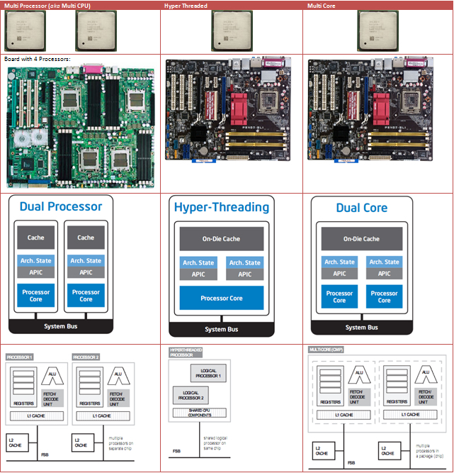

프로세서와 프로세스
간단하게 말하면 프로세스(process)는 실행해야 하는 일련의 작업이고, 프로세서(processor)는 프로세스를 실행하는 주체이다. 나아가 어떤 프로세서가 어떤 프로세스를 얼마나 실행시킬지에 대한 실행을 계획하는 것을 스케줄링이라 한다.
만약 프로세서와 프로세스가 하나씩만 있다면 항상 같은 프로세서가 같은 프로세스를 실행할 것이므로 스케줄은 항상 같아 스케줄링이 필요없다. 하지만 프로세스의 수가 많다면 어떤 프로세스를 언제 실행할 것인지 스케줄링을 할 필요가 생긴다. 만약 스케줄링을 하지 않고 시작한 프로세스를 다 끝내고 나서야 다음 프로세스를 실행시킨다면 실행 중인 프로세스를 제외한 나머지 프로세스들은 기약없이 기다리게 될 수도 있다. 왜냐하면 프로그램의 구현이나 예외 등에 따라 프로세스 수행 중 대기시간이 무한대가 될 수 있기때문에 종료시간이 보장되지 않기 때문이다.
멀티 프로세서와 멀티 코어
멀티 프로세서(multiprocessor)는 “멀티(multi-)”라는 뜻대로 복수의 프로세서를 가지는 것을 의미한다. 각 프로세서는 단일 직접 회로, 즉 하나의 칩이라는 것 까지만 정의되고 어떻게 구성되는 지는 알 수 없다. 하지만 한 프로세서가 적어도 하나의 CPU는 가지고 있을 것이므로 병렬 처리가 가능한 시스템이라는 사실은 알 수 있다. 주기억장치는 공유되지만 각 프로세서는 자신의 캐시와 CPU를 가지고 서로 다른 프로세스의 서로 다른 명령어를 동시에 실행시킬 수 있다.

반면 멀티 코어는 멀티 코어 프로세서(multi-core processor)의 줄임말로 하나의 프로세서 내에 두 개 이상의 코어가 있는 것을 말한다. 코어 수에 따라 구체적인 명칭을 사용하기도 한다. 예를 들어, 코어가 두 개일 경우 듀얼 코어(dual-core), 네 개일 경우 쿼드 코어(quad-core)라고 부른다. 복수의 프로세스를 동시에 실행시킬 수 있다는 점은 멀티 프로세서와 같지만 복수의 코어가 같은 칩 안에 있다는 점이 다르다. 따라서 코어 간 거리가 물리적으로 가깝기 때문에 코어 간 정보 전달이나 프로세스를 한 프로세서에서 다른 프로세서로 옮기는 프로세스 이주(process migration) 시에 멀티 프로세서보다 오버헤드(overhead)가 적은 등 여러 이점이 있다.
그렇다면 싱글 코어 프로세서가 두 개인 시스템과 듀얼 코어를 비교한다면 어떤 것이 빠를까? 항상 우세인 것은 없고 상황에 따라 달라진다. 코어 간의 상호 작용이 없다면 클럭 속도(clock rate)에 의해 좌우될 수 있다. 클럭 속도가 높을 수록 같은 시간에 처리할 수 있는 명령어의 수가 많으므로, 전체 코어의 수가 같더라도 클럭 속도가 높은 쪽이 처리량이 높을 확률이 크다. 클럭 속도가 같다면 다음으로 캐시(cache)의 영향을 생각해 볼 수 있다. 프로세서마다 별도로 캐시를 가지기에 듀얼 코어는 동시에 두 코어가 같은 캐시에 접근한다. 자원을 공유할 일이 없는 서로 다른 프로세스를 실행시킨다면 경쟁적으로 캐시를 사용하여 싱글 코어에 비하여 캐시 실패(cache miss)를 더 많이 유발시킬 수도 있다. 이 경우 싱글 코어가 더 유리한 환경이 된다. 만약 반대로 동일한 프로그램을 다중으로 실행하는 등 동일한 메모리에 접근을 많이 하는 상황이 된다면 캐시 적중(cache hit)이 많아져 멀티 코어가 더 유리해질 것이다. 이렇듯 설계와 실제 실행 환경에 따라 드러나는 장단점을 인지해두는 것이 중요하다.
추가적으로 UMA(Uniform Memory Access)와 NUMA(Non-uniform Memory Access)도 알아두면 좋다. UMA와 NUMA는 프로세서가 많아지는 병렬 컴퓨팅(parallel computing) 환경 하에서 메모리를 효율적으로 사용하기 위해 고안된 설계들이다. UMA는 각 코어에서 메모리에 접근하는 속도가 균등하도록 설계된 것으로, 접근 시간이 결정적이지만 동시에 여러 프로세서가 한 번에 메모리에 접근할 수 없어 시분할에 적합하다. NUMA는 UMA와 대조되는 개념으로 각 프로세서가 별도의 메모리 컨트롤러를 가지고 계층 구조로 연결되어 있어 요청한 메모리의 물리적 위치에 따라 접근 속도가 매번 달라질 수 있다. 대신 동시에 접근할 수 있어 일반적으로 UMA보다 빠르고 실시간성이 요구되는 시스템에 적합하다.
Reference
- https://ko.wikipedia.org/wiki/프로세스
- https://ko.wikipedia.org/wiki/다중_처리
- https://ko.wikipedia.org/wiki/불균열_기억_장치_접근
- https://en.wikipedia.org/wiki/Process
- https://en.wikipedia.org/wiki/Uniprocessor_system
- https://en.wikipedia.org/wiki/Uniform_memory_access
- https://en.wikipedia.org/wiki/Non-uniform_memory_access